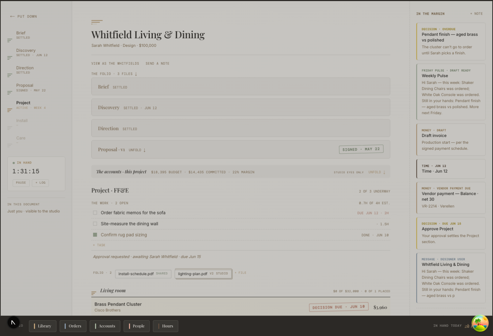

Patina Designer · detailed UI/UX proposal
Keep the project in hand.
Boards, Library finds, Chrome captures, and imported schedules become one continuous act inside the existing Document.
Ellsworth Residence
What designers are telling us
The feedback is not “we need one more button.” It is “I lose the project when I try to build it.”
Repository-grounded evidence · current Designer Portal
Start from the Document that already exists.

Live implementation: DocumentPage, ProjectMoodBoards, FFESectionBody, StudioDrawer, DocSheet. Existing decision contract: one document in hand; paper fills the viewport; no shadows; overlays must be sheet-weight.
The ruling behind every screen
Do not add a project dashboard. Make the Project section more capable.
The Document is the engagement. Boards are working rooms. The Library is a Studio room. FF&E lines are the operational record. Sheets handle focused construction without creating another place to go.
Document
Shows what is settled, what is being built, and the next useful act.
Board room
Composes a direction from project selections and visual references.
Paper sheet
Creates, imports, routes, or edits while preserving project context.
Studio Drawer
Reaches Library and operational ledgers without becoming project IA.
Where the new capability lives
The active Project section becomes a work folio, not a report.
One line names the most useful unfinished act: resume board, route captures, finish specifications.
Visible even when empty; “New board” lives at the heading and in the first-run proof.
One verb at the Project · FF&E heading opens all valid sources.
Two clipped pieces are ready to place. Three selections still need finish and lead time.
Room owns allocation and default routing. “Add a line” remains available for a named need.
Shows provenance, facts, placements, readiness, decision history, and the authorization boundary.
Formal actions remain schedule acts; the working workflow feeds them instead of bypassing them.
Continuity requires explicit identity
Five identities keep one idea from becoming five conflicting records.
Maker, source URL, media, trade facts. Reusable across engagements.
product_idRoom, quantity, configuration, client price, working facts and project decisions.
project_ffe_item_idCanvas position, crop, scale, board, section. Many placements may reference one selection.
placement_id → project_ffe_item_idExactly what the client saw and judged in one immutable, nonbinding review edition.
review_item_id → frozen viewSigned quantity, configuration, and money snapshot. Later change voids or supersedes.
authorization_item_id → source lineThe same chair in Living and Library, with different finishes or quantities, can be two legitimate project needs.
One selection may appear on several boards; deleting a placement must never delete authorized work.
capture_id is provenance, an inbox arrival, or a board reference—it is not interchangeable with product_id. Product placements need an explicit project_ffe_item_id link plus migration/RPC work.Mockup · Document in hand
On return, the project answers “what can I do next?” before it reports status.
Project
18 selections · 3 roomsNew board
Project · FF&E
7 underway · 3 need factsSpec book →+ Add to projectInteractive journey map
Several doors in. One project sentence out.
Pin a product or reference
A visual reference can remain board-only. A real product becomes a project candidate when promoted.
Room + board are already known
The canvas supplies context; no duplicate destination form is needed.
One project selection
It appears in the working FF&E folio with board provenance and missing facts.
Mockup · multi-source DocSheet
“Add to project” lays the valid entrances over the work already in hand.
Project · FF&E
18 selections+ Add to projectAdd to project
Mockup · no boards and no FF&E lines
The empty project teaches the first move instead of merely naming absence.
Project
Ready to buildBegin with a direction
Start a visual board for a room. References can stay loose; products can join FF&E when ready.
Begin with known pieces
Browse the Library, paste a link, import a schedule, or name the first room need.
Project · FF&E
0 selections+ Add to projectBest when direction is still fluid.
Best when selections are already known.
Best when scope precedes sourcing.
Mockup · New board DocSheet
Create a board with enough context to be useful—and no separate setup trip.
Project
Start a board
STUDIO ONLY · Patina starters, your studio templates, and another board remain available.
Mockup · full-screen working room
The board is a working room of the project—not a second inventory.
Board behavior contract
References stay loose. Products gain continuity.
Concept work should not require procurement facts. Commitment happens progressively and explicitly.
Inspiration only
Room image, texture, palette, render, note. Lives on the board. Never silently enters FF&E.
Working candidate
Has source identity. Promoting it creates or deliberately reuses a project selection and placement link.
Included in working FF&E
Owns room, quantity, configuration, price, readiness, decisions, and downstream continuity.
“Keep as reference”
The default for pasted imagery when no product details are detected.
- Board-only
- No schedule noise
- Can be promoted later
“Make a product”
Patina shows known source facts, asks only for a project need, and records provenance.
- Choose existing need or make a new line
- Room inherits from board
- Missing facts become a checklist
Mockup · Library room in project context
The Library opens with the project destination pinned to the work.
The Library
CaptureSeating · 184 products
My shelf + studio + catalogSearchFiltersMockup · same source, contextual choice
Dedupe asks about project intent—not whether two URLs match.
Is this the same project need?
Living Room · LV-04
Halsted lounge chair · Qty 2 · flax linen · shortlisted
Client decision: not shared
Specs: 2 facts missing
Halsted lounge chair
Same maker URL and SKU. The Library item itself remains reusable.
Proposed room: Living Room
Configuration: not chosen
Same need; another placement or view.
Same product; different project intent.
Show existing authorization before any change.
Mockup · destination-aware Chrome clipper
The clipper finishes the thought while the source page is still open.
Solid walnut · hand-tied seat
$1,340Mockup · quiet work folio in Project
Unsorted is a forgiving inbox—not a dead end.
Project
4 captures · 3 shownWorking boards
3 live+ New boardProject · FF&E
18 selections+ Add to projectMockup · staged CSV / XLSX import
Import respects the spreadsheet already in use—and makes every mismatch recoverable.
CSV or XLSX · up to 5,000 rows. Patina reads a preview before creating project lines.
Choose fileDownload Patina column guide
Mockup · selections woven into the existing schedule
FF&E grows as the project grows—without becoming a separate “Selections app.”
Project · FF&E
18 selections · 7 underwaySpec book →Bill 4+ Add to projectMockup · expanded existing line-unfold pattern
The line unfold holds the complete working truth.
Project specification
Ready for client review
Living seating
Qty 2 · walnut / flax
No sample recorded
Maker has not confirmed
$3,620
Decision + provenance history
08 Aug · Concept 03
08 Aug · placement link
07 Aug · Chrome
Behavioral contract · separate actors and consequences
Five axes. Never one overloaded “status.”
Disposition
- Considering
- Shortlisted
- Rejected
Verdict
- Not shared
- Pending
- Looks good
- Needs a change / question
Readiness
- Draft
- 2 facts missing
- Ready for review
- Ready for release
Authorization
- Not released
- Draft release
- Sent to client
- Authorized · executed
- Voided / superseded
Procurement
- Specified
- Quoted
- Ordered
- Production
- Shipped · delivered · installed
Mockup · studio preview and client mirror
Client review is a controlled mirror—not a copy of the studio’s board.
Preview as client
Studio controlsHalsted lounge chair
Vendor · SKU · trade cost · markup · source link are visible to the studio.
Wool rug · 10 × 14
Client price, quantity, finish notes, and review prompt are visible.
Living Room selections
Morgan’s viewHalsted lounge chair
Walnut · flax linen · Qty 2
$3,620 · estimated 12–14 weeks
Wool rug · 10 × 14
Natural wool · espresso border
$8,950 · custom
“Looks good” records nonbinding preference. It never authorizes purchase; the formal release instrument remains a separate act.
Three authority boundaries · working, released, executed
Replacement changes at release—and changes again at execution.
Before release
Replace or fill a placeholder while preserving why the design changed.
- Link the alternate in the same selection thread
- Keep the prior verdict as historical provenance
- Reset the active verdict; review anew
- Choose whether placements swap
While the release is out
Released money and configuration cannot change—even before signature.
- Void the release with a recorded reason
- Then start the replacement selection
- Reset active preference review
- No authority to order yet
After execution
The authorized quantity, configuration, and money remain part of the record.
- Start a superseding selection
- Explain price and schedule delta
- Collect a new authorization or addendum
- After PO send, use a vendor change path
Phase 0 · required before project-native working views
“Studio only” must be true at the data edge—not merely hidden in the interface.
The proposed experience assumes candidates, raw boards, trade facts, and markup are private until a designer deliberately publishes a review edition. Current access rules do not make that promise consistently.
| Working truth | Current risk | Required contract | Client receives |
|---|---|---|---|
| Project-owned board | Project clients can select live board and item rows; “Draft” is not an access boundary. | client_visible = false by default; narrow RLS; publish immutable review edition | Only the explicitly published composition |
| Working board media | The proposal-mood-boards bucket currently permits public reads; private rows cannot hide public objects. | Move working uploads behind private signed access; publish immutable client-safe media derivatives | Only media attached to the published review edition |
| Candidate / unsorted FF&E | Legacy-origin projects can expose raw project_ffe_items. | Narrow raw client RLS for every project; use curated review and authorized projections | Only fields selected for the active review |
| Studio price and provenance | Rendering controls cannot protect columns that the client can query. | Server-shaped response omits trade cost, markup, studio notes, PO data, and internal provenance | Client price, quantity, finish, lead time, public attachments |
| Signed authorization | Working facts can diverge from a released snapshot. | Existing immutable authorization item remains the authority; working replacement voids or supersedes | Exact signed snapshot and later change record |
Failure, interruption, and accessibility proof
Recovery is part of the primary flow.
Safe in the Library
“The piece is safe in My Library. We could not place it in Ellsworth.” Preserve destination and offer Retry placement.
Intent before merge
Show the existing project need and ask reuse vs separate line. Never dedupe silently.
Preview, then commit
No project lines are created until mapping and issue review are confirmed. Export an issue file.
Change path only
Disable destructive replacement; explain the lock and offer void/supersede with delta.
Sheets trap and return focus
Esc puts back. Board source tabs use roving focus. Mock controls in this deck are inert; product UI actions are semantic buttons.
Announce outcome + destination
“Added Halsted chair to Ellsworth · Living Room · Concept 03.” Errors precede correction fields.
State never relies on color
Text labels, stamps, borders, and icons carry meaning. Minimum 44px touch targets in product UI.
Responsive proof · 390px product target
Mobile keeps the same nouns and verbs; only the spatial arrangement changes.
Ellsworth Residence
Full-service furnishing · Morgan Ellsworth
Project · FF&E
18Project · FF&E
Add to project
Design-to-implementation handoff
Reuse the Document grammar. Add only the contracts that are missing.
| Proposed surface | Existing Patina grammar to reuse | New behavior / data contract | Primary acceptance proof |
|---|---|---|---|
| Continue work line | WorkBlock + Document section anchor | Priority resolver across boards, captures, spec gaps, decisions | Returning designer resumes the named act in one click |
| Working boards folio | ProjectMoodBoards + Board Room route | Visible empty/new tile; project-room FK; private-by-default RLS; exact return anchor | Boards originate inside Project and remain studio-only until published |
| Add to project | DocumentAction + DocSheet | Multi-source chooser; destination context; result reveal | Board, Library, link, need, import are all discoverable |
| Project Library placement | Library Room + Studio Drawer room routing | Destination strip; multi-select; contextual dedupe | Products land on correct project lines without copied facts |
| Board product pins | Board composition + inspector | placement_id → project_ffe_item_id; reference promotion | One selection on many boards; placement removal is safe |
| Working FF&E line | FFESectionBody + existing line unfold | Provenance, disposition, readiness gates, placements, decision history | Scan and unfold answer next act without status overload |
| Client review / replacement | Client mirror + release ceremony + instrument lines | Revision snapshots; separate verdict; void/supersede change path | Preference never implies spend; signed money never mutates |
Names are implementation references, not prescribed UI copy. Detailed build should start with task/schema review for the placement link and separate state axes before treating these screens as a front-end-only change.
Proposed delivery sequence
Secure the working layer, then make building obvious.
The foundation
- Narrow board and project FF&E client RLS
- Move working board media behind private access
- Add project-room identity to live boards
- Link board placements to project selections
- Separate Unsorted from Throughout
- Validate every destination server-side
The entrances
- Continue work line in Project
- Working boards empty/new affordances
- Add to project DocSheet
- Project-scoped Library and clipper routing
- Unsorted work folio + import preview
Review and authority
- Immutable review editions + private derivatives
- Verdicts anchored to edition-item IDs
- Separate disposition and readiness gates
- Replacement threads and reset verdicts
- Void/supersede after release
Project open → first add; entrance chosen.
Add complete → result revealed; duplicate intent.
Unsorted count and age to placement.
Readiness, verdict, authority, logistics—measured separately.
Set numeric targets only after baseline instrumentation. Evaluate board, Library, clipper, import, and need-first paths separately; designer usability sessions remain the decision gate.
Leadership + Design · mark Accept or Change
Approve the model and the prototype defaults separately.
Research synthesis · professional practice + current tools + Patina grammar
The evidence supports three doors in—and one project sentence out.
Work loops, then converges.
Discovery, concept, selection, documentation, coordination, procurement, and installation are iterative—not a single wizard.
Boards, Library, and capture coexist.
Design tools expose project-native boards plus reusable products, web capture, placeholders, and spreadsheet paths.
The Document remains the project.
Sheets handle quick reversible acts; Rooms hold deep work; every return restores the exact project sentence in hand.
Discovery, concept, selections, documentation, coordination.
Selection, procurement roles, delivery and installation.
Project-native creation, multi-source capture, placeholders.
Clipper, Library, URL, manual, and spreadsheet paths.
Visible Add Design action inside the project.
Forgiving Unsorted area for later organization.
Full evidence ledger: One Project, Three Doors In · Internal grammar: The Document decisions · Research accessed 09 Aug 2026.